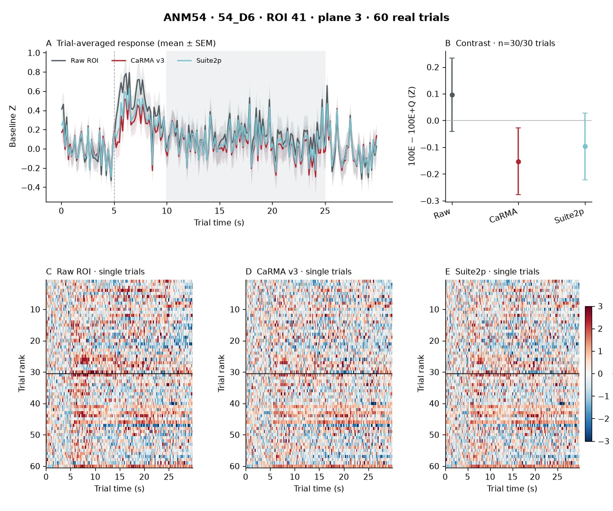

UNMATCHED_D6_ROI041
Identity authority: NO_VALIDATED_CROSSDAY_MATCH. 1 matched day(s): D6.
Each day uses its real session-local ROI ID; the figures expose all available trials and all three extraction methods. Missing days mean no validated correspondence; they do not establish biological disappearance. For D1–D2 and D3–D9 the identity evidence comes from different matching layers and is not silently bridged.
D1
No validated cross-day correspondence
D2
No validated cross-day correspondence
D3
No validated cross-day correspondence
D5
D6 · ROI 41No validated cross-day correspondence


Open full raw / CaRMA v3 / Suite2p comparisonD7
No validated cross-day correspondence
D8
No validated cross-day correspondence
D9
No validated cross-day correspondence